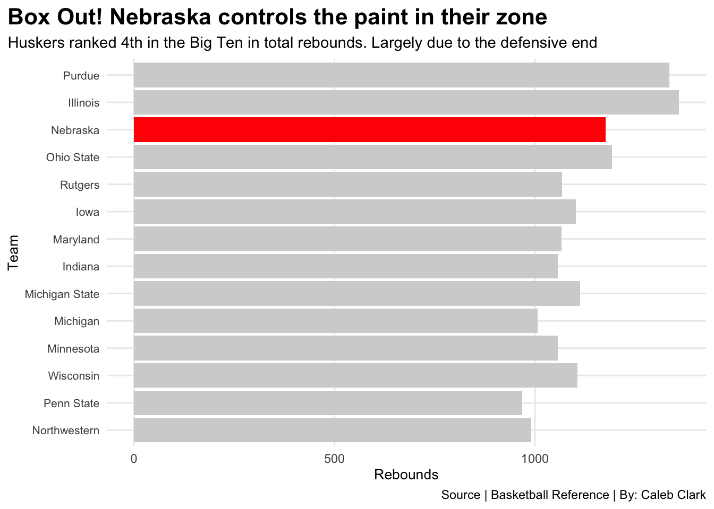
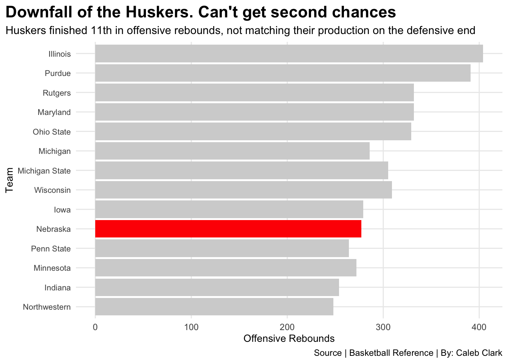

How did Nebraska have success in total rebounding but struggle in offensive rebounding?
ncaa
basketball
huskers
Author
Caleb Clark
Published
November 17, 2024
During the 2023-2024 men’s college basketball season, the Nebraska Cornhuskers ranked within the top 70 in total rebounds. They worked hard to dominate on the defensive end and it paid off ranking within the top 20. Their issue? Getting second chances on the offensive side. Nebraska ranked 241st in Division one basketball in offensive rebounding and struggled in their biggest moments which led to an early exit in the tournament.
The question is: How can you dominate but also struggle doing the exact same thing but opposite ends of the court?
The Huskers match up nicely against Wisconsin and actually outperform them by 70 rebounds in total. But when you look at the red dots, there is a clear advantage for the Badgers.
How does Nebraska continuously out rebound teams on the defensive side but cannot keep up with them when they change sides. Is it a lack of agressiveness or size?
Speaking of size, let’s compare them to the cream of the crop, the Purdue Boilermakers.
Yikes. Purdue dominated both total rebounds and offensive rebounds vs the Huskers but they had the best rebounder in college basketball in 7’4 inch Zach Edey so it was not a shock to see them with a clear advantage over the Huskers.
But if we were to compare them to the entire Big Ten in both total and offensive rebounds, where would they rank and what can it tell us?
Code
library(tidyverse)big10 <- basketball |>filter(Conference =="Big Ten")huskers <- basketball |>filter( Team =="Nebraska" )ggplot() +geom_bar(data=big10, aes(x=reorder(Team, TeamTotalRebounds), weight=TeamTotalRebounds), fill="lightgrey") +geom_bar(data=huskers, aes(x=reorder(Team, TeamTotalRebounds), weight=TeamTotalRebounds), fill="red") +coord_flip() +labs(title ="Box Out! Nebraska controls the paint in their zone",subtitle ="Huskers ranked 4th in the Big Ten in total rebounds. Largely due to the defensive end",x ="Team",y ="Rebounds",fill ="Rebound Type",caption ="Source | Basketball Reference | By: Caleb Clark" ) +theme_minimal()+theme(plot.title =element_text(size =16, face="bold"),axis.title =element_text(size=10),plot.subtitle =element_text(size=11),plot.title.position ="plot",panel.grid.minor =element_blank(),axis.text.y =element_text(size =8), panel.background =element_rect(fill ="white", color ="white"),plot.background =element_rect(fill ="white", color ="white") )

Well this tells me that Coach Fred Hoiberg makes sure that Nebraska boxes out and controls the defensive side of the court. Illinois and Purdue are a cut above everyone else but those Huskers aren’t too far behind.
Now it is time to check out where Nebraska is on the other end. Spoiler alert, it’s not as good.
Code
ggplot() +geom_bar(data=big10, aes(x=reorder(Team, TeamOffRebounds), weight=TeamOffRebounds), fill="lightgrey") +geom_bar(data=huskers, aes(x=reorder(Team, TeamOffRebounds), weight=TeamOffRebounds), fill="red") +coord_flip() +labs(title ="Downfall of the Huskers. Can't get second chances",subtitle ="Huskers finished 11th in offensive rebounds, not matching their production on the defensive end",x ="Team",y ="Offensive Rebounds",fill ="Rebound Type",caption ="Source | Basketball Reference | By: Caleb Clark" ) +theme_minimal()+theme(plot.title =element_text(size =16, face="bold"),axis.title =element_text(size=10),plot.subtitle =element_text(size=11),plot.title.position ="plot",panel.grid.minor =element_blank(),axis.text.y =element_text(size =8), panel.background =element_rect(fill ="white", color ="white"), plot.background =element_rect(fill ="white", color ="white") )

Is it a lack of effort, guys not following their shots? Something tells me it has to do with their lack of size too. No one on the roster was over the height of six foot nine. Boxing out can obviously get you rebounds on the defensive end as the Huskers have shown, but they have an issue at getting around other teams taller players when they are on offense.
Now instead of just seeing a small sample size like the Big Ten, how about we see where Nebraska ends up around the NCAA, against some of the top teams in the entire country.
As we can see, they are in the top percentile in defensive rebounding and it should continue to improve with added height to their 2024-2025 roster. But, can Coach Hoiberg figure out how to get more second chance opportunities which will lead to more points for the Huskers. If this trend continues, Nebraska will struggle to reach the goals they set for themselves.